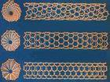
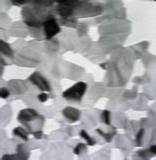

纳米材料
纳米材料是指在三维空间中至少有一维处于纳米尺度范围(1-100nm)或由它们作为基本单元构成的材料，这大约相当于10~100个原子紧密排列在一起的尺度。
从尺寸大小来说，通常产生物理化学性质显著变化的细小微粒的尺寸在0.1微米以下（注：1米=1000毫米，1毫米=1000微米，1微米=1000纳米），即100纳米以下。因此，颗粒尺寸在1～的微粒称为超微粒材料，也是一种纳米材料。
定义定律
纳米级结构材料简称为纳米材料(nanometer material)，是指其结构单元的尺寸介于1纳米～100纳米范围之间。由于它的尺寸已经接近电子的相干长度，它的性质因为强相干所带来的自组织使得性质发生很大变化。并且，其尺度已接近光的波长，加上其具有大表面的特殊效应，因此其所表现的特性，例如熔点、磁性、光学、导热、导电特性等等，往往不同于该物质在整体状态时所表现的性质。
纳米颗粒材料又称为超微颗粒材料，由纳米粒子(nano particle)组成。纳米粒子也叫超微颗粒，一般是指尺寸在1～100nm间的粒子，是处在原子簇和宏观物体交界的过渡区域，从通常的关于微观和宏观的观点看，这样的系统既非典型的微观系统亦非典型的宏观系统，是一种典型的介观系统，它具有表面效应、小尺寸效应和宏观量子隧道效应。当人们将宏观物体细分成超微颗粒（纳米级）后，它将显示出许多奇异的特性，即它的光学、热学、电学、磁学、力学以及化学方面的性质和大块固体时相比将会有显著的不同。
纳米技术的广义范围可包括纳米材料技术及纳米加工技术、料技术着重于纳米功能性材料的生产（超微粉、镀膜、纳改性材料等），性能检测技术（化学组成、微结构、表面形态、物、化、电、磁、热及光学等性能）。纳米加工技术包含精密加工技术（能量束加工等）及扫描探针技术。
纳米材料具有一定的独特性，当物质尺度小到一定程度时，则必须改用量子力学取代传统力学的观点来描述它的行为，当粉末粒子尺寸由10微米降至10纳米时，其粒径虽改变为1000倍，但换算成体积时则将有10的9次方倍之巨，所以二者行为上将产生明显的差异。
纳米粒子异于大块物质的理由是在其表面积相对增大，也就是超微粒子的表面布满了阶梯状结构，此结构代表具有高表面能的不安定原子。这类原子极易与外来原子吸附键结，同时因粒径缩小而提供了大表面的活性原子。
纳米材料由于微粒数骤增，其整个表面积变得极大，从而处于使粒子界面上的原子比例也变得非常高，通常可达到总原子数的一半左右。因此，纳米材料常会具有奇特的光、电、磁、热、力和化学等方面的性质，和宏观材料显得与众不同。例如，金的熔点为1063°C，如将金制成纳米粉末后，熔点可降低到330°C；银的熔点为961°C，制成纳米银粉后熔点可降低至100°C。再如有些催化剂制成纳米材料后，由于表面积变大，活性成倍提高，催化反应的温度也可下降好几百度。
一般常见的磁性物质均属多磁区之集合体，当粒子尺寸小至无法区分出其磁区时，即形成单磁区之磁性物质。因此磁性材料制作成超微粒子或薄膜时，将成为优异的磁性材料。
纳米粒子的粒径（10纳米～100纳米）小于光波的长，因此将与入射光产生复杂的交互作用。金属在适当的蒸发沉积条件下，可得到易吸收光的黑色金属超微粒子，称为金属黑，这与金属在真空镀膜形成高反射率光泽面成强烈对比。纳米材料因其光吸收率大的特色，可应用于红外线感测器材料。
发展历史
纳米金属材料是20世纪80年代中期研制成功的，后来相继问世的有纳米半导体薄膜、纳米陶瓷、纳米瓷性材料和纳米生物医学材料等。
其他相关
不过，纳米材料在生产技术上还存在不少困难，因为用研磨的方法是不可能获得超细粒粉末的。目前，一般选用较为特殊的物理或化学加工方法，来获得细微的纳米粉末。例如，科学家将金属置于一个充满惰性气体氦的密封室里，然后对金属加热使之变成蒸汽，金属原子在氦气中冷凝成金属烟雾，这些细小如炭黑一般的烟雾，就成了纳米金属粉末。收集这些超细粒粉末，再做磨压、烧结等处理，就能得到由纳米金属制成的零件了。另外，科学家们还用激光蒸发凝固法，来制取陶瓷超微粒粉末，得到的微粒直径仅几纳米。不过，这些制作方法不仅成本很高，且生产规模也极有限。因而在生产技术和应用领域方面还有不少难关需要攻克。
纳米材料的出现已经引起了人们浓厚的兴趣和关注。科学家相信，21世纪中，纳米材料将会有日新月异的发展。
结构
纳米结构是以纳米尺度的物质单元为基础按一定规律构筑或营造的一种新体系。它包括纳米阵列体系、介孔组装体系、薄膜嵌镶体系。目前对纳米阵列体系的研究集中在由金属纳米微粒或半导体纳米微粒在一个绝缘的衬底上整齐排列所形成的二位体系上。而纳米微粒与介孔固体组装体系由于微粒本身的特性，以及与界面的基体耦合所产生的一些新的效应，也使其成为了研究热点，按照其中支撑体的种类可将它划分为无机介孔复合体和高分子介孔复合体两大类，按支撑体的状态又可将它划分为有序介孔复合体和无序介孔复合体。在薄膜嵌镶体系中，对纳米颗粒膜的主要研究是基于体系的电学特性和磁学特性而展开的。美国科学家利用自组装技术将几百只单壁纳米碳管组成晶体索“Ropes”，这种索具有金属特性，室温下电阻率小于0.0001Ω/m;将纳米三碘化铅组装到尼龙-11上，在X射线照射下具有光电导性能, 利用这种性能为发展数字射线照相奠定了基础。
发展分析
随着我国对纳米材料的持续政策支持和研发投入，以及下游需求对纳米材料的持续拉动，未来我国纳米材料行业将保持快速发展态势。前瞻《中国纳米材料行业发展前景与投资预测分析报告前瞻》中根据我国纳米材料的历史发展规律，结合当前的政策支持和纳米材料发展状况，预测未来5年我国纳米材料的市场规模将出现较大幅度的增长，年均增幅在15%以上，到2017年纳米材料的市场规模将超过70亿元。
从各国对纳米材料和纳米科技的部署来看，当前世界各国纳米科技战略是：以经济振兴和国家实力的需求为目标，牵引纳米材料的基础研究、应用研究；组织多学科的科技人员交叉创新，做到基础研究、应用研究并举，纳米科学、纳米技术并举，重视基础研究和应用研究的衔接，重视技术集成；重视发展纳米材料和技术改造传统产品，提高技术含量；重视纳米材料和纳米技术在环境、能源和信息等领域的应用，实现跨越式发展。我国的纳米材料发展也呈现相同的趋势，同时结合环境、能源环保、生物医药等行业重点发展相关纳米技术。
发展历程
1861年，随着胶体化学的建立，科学家们开始了对直径为1~100nm的粒子体系的研究工作。
真正有意识的研究纳米粒子可追溯到20世纪30年代的日本的为了军事需要而开展的“沉烟试验”，但受到当时试验水平和条件限制，虽用真空蒸发法制成了世界第一批超微铅粉，但光吸收性能很不稳定。
到了20世纪60年代人们开始对分立的纳米粒子进行研究。1963年，Uyeda用气体蒸发冷凝法制的了金属纳米微粒，并对其进行了电镜和电子衍射研究。1984年德国萨尔兰大学（Saarland University)的Gleiter以及美国阿贡实验室的Siegal相继成功地制得了纯物质的纳米细粉。Gleiter在高真空的条件下将粒子直径为6nm的铁粒子原位加压成形，烧结得到了纳米微晶体块，从而使得纳米材料的研究进入了一个新阶段。
1990年7月在美国召开了第一届国际纳米科技技术会议（International Conference on Nanoscience&Technology)，正式宣布纳米材料科学为材料科学的一个新分支。
自20世纪70年代纳米颗粒材料问世以来，从研究内涵和特点大致可划分为三个阶段：
第一阶段（1990年以前）：主要是在实验室探索用各种方法制备各种材料的纳米颗粒粉体或合成块体，研究评估表征的方法，探索纳米材料不同于普通材料的特殊性能；研究对象一般局限在单一材料和单相材料，国际上通常把这种材料称为纳米晶或纳米相材料。
第二阶段（1990~1994年）：人们关注的热点是如何利用纳米材料已发掘的物理和化学特性，设计纳米复合材料，复合材料的合成和物性探索一度成为纳米材料研究的主导方向。
第三阶段（1994年至今）：纳米组装体系、人工组装合成的纳米结构材料体系正在成为纳米材料研究的新热点。国际上把这类材料称为纳米组装材料体系或者纳米尺度的图案材料。它的基本内涵是以纳米颗粒以及它们组成的纳米丝、管为基本单元在一维、二维和三维空间组装排列成具有纳米结构的体系。
技术指标
纳米氧化铝外观 白色粉末。
纳米氧化铝晶相γ相。
纳米氧化铝平均粒度(nm) 20±5.
纳米氧化铝含量% 大于 99.9%。
熔点：2010℃-2050 ℃
沸点：2980 ℃
应用范围
1、 天然纳米材料
海龟在美国佛罗里达州的海边产卵，但出生后的幼小海龟为了寻找食物，却要游到英国附近的海域，才能得以生存和长大。最后，长大的海龟还要再回到佛罗里达州的海边产卵。如此来回约需5～6年，为什么海龟能够进行几万千米的长途跋涉呢？它们依靠的是头部内的纳米磁性材料，为它们准确无误地导航。
生物学家在研究鸽子、海豚、蝴蝶、蜜蜂等生物为什么从来不会迷失方向时，也发现这些生物体内同样存在着纳米材料为它们导航。
2、 纳米磁性材料
在实际中应用的纳米材料大多数都是人工制造的。纳米磁性材料具有十分特别的磁学性质，纳米粒子尺寸小，具有单磁畴结构和矫顽力很高的特性，用它制成的磁记录材料不仅音质、图像和信噪比好，而且记录密度比γ-Fe2O3高几十倍。超顺磁的强磁性纳米颗粒还可制成磁性液体，用于电声器件、阻尼器件、旋转密封及润滑和选矿等领域。
3、 纳米陶瓷材料
传统的陶瓷材料中晶粒不易滑动，材料质脆，烧结温度高。纳米陶瓷的晶粒尺寸小，晶粒容易在其他晶粒上运动，因此，纳米陶瓷材料具有极高的强度和高韧性以及良好的延展性，这些特性使纳米陶瓷材料可在常温或次高温下进行冷加工。如果在次高温下将纳米陶瓷颗粒加工成形，然后做表面退火处理，就可以使纳米材料成为一种表面保持常规陶瓷材料的硬度和化学稳定性，而内部仍具有纳米材料的延展性的高性能陶瓷。
4、纳米传感器
纳米二氧化锆、氧化镍、二氧化钛等陶瓷对温度变化、红外线以及汽车尾气都十分敏感。因此，可以用它们制作温度传感器、红外线检测仪和汽车尾气检测仪，检测灵敏度比普通的同类陶瓷传感器高得多。
5、 纳米倾斜功能材料
在航天用的氢氧发动机中，燃烧室的内表面需要耐高温，其外表面要与冷却剂接触。因此，内表面要用陶瓷制作，外表面则要用导热性良好的金属制作。但块状陶瓷和金属很难结合在一起。如果制作时在金属和陶瓷之间使其成分逐渐地连续变化，让金属和陶瓷“你中有我、我中有你”，最终便能结合在一起形成倾斜功能材料，它的意思是其中的成分变化像一个倾斜的梯子。当用金属和陶瓷纳米颗粒按其含量逐渐变化的要求混合后烧结成形时，就能达到燃烧室内侧耐高温、外侧有良好导热性的要求。
6、纳米半导体材料
将硅、砷化镓等半导体材料制成纳米材料，具有许多优异性能。例如，纳米半导体中的量子隧道效应使某些半导体材料的电子输运反常、导电率降低，电导热系数也随颗粒尺寸的减小而下降，甚至出现负值。这些特性在大规模集成电路器件、光电器件等领域发挥重要的作用。
利用半导体纳米粒子可以制备出光电转化效率高的、即使在阴雨天也能正常工作的新型太阳能电池。由于纳米半导体粒子受光照射时产生的电子和空穴具有较强的还原和氧化能力，因而它能氧化有毒的无机物，降解大多数有机物，最终生成无毒、无味的二氧化碳、水等，所以，可以借助半导体纳米粒子利用太阳能催化分解无机物和有机物。
7、纳米催化材料
纳米粒子是一种极好的催化剂，这是由于纳米粒子尺寸小、表面的体积分数较大、表面的化学键状态和电子态与颗粒内部不同、表面原子配位不全，导致表面的活性位置增加，使它具备了作为催化剂的基本条件。
镍或铜锌化合物的纳米粒子对某些有机物的氢化反应是极好的催化剂，可替代昂贵的铂或钯催化剂。纳米铂黑催化剂可以使乙烯的氧化反应的温度从600 ℃降低到室温。
8、 医疗上的应用
血液中红血球的大小为6 000～9 000 nm，而纳米粒子只有几个纳米大小，实际上比红血球小得多，因此它可以在血液中自由活动。如果把各种有治疗作用的纳米粒子注入到人体各个部位，便可以检查病变和进行治疗，其作用要比传统的打针、吃药的效果好。
使用纳米技术能使药品生产过程越来越精细，并在纳米材料的尺度上直接利用原子、分子的排布制造具有特定功能的药品。纳米材料粒子将使药物在人体内的传输更为方便，用数层纳米粒子包裹的智能药物进入人体后可主动搜索并攻击癌细胞或修补损伤组织。使用纳米技术的新型诊断仪器只需检测少量血液，就能通过其中的蛋白质和DNA诊断出各种疾病。
9、纳米计算机
世界上第一台电子计算机诞生于1945年，它是由美国的大学和陆军部共同研制成功的，一共用了18 000个电子管，总重量30 t，占地面积约170 m，可以算得上一个庞然大物了，可是，它在1 s内只能完成5 000次运算。
经过了半个世纪，由于集成电路技术、微电子学、信息存储技术、计算机语言和编程技术的发展，使计算机技术有了飞速的发展。今天的计算机小巧玲珑，可以摆在一张电脑桌上，它的重量只有老祖宗的万分之一，但运算速度却远远超过了第一代电子计算机。
如果采用纳米技术来构筑电子计算机的器件，那么这种未来的计算机将是一种“分子计算机”，其袖珍的程度又远非今天的计算机可比，而且在节约材料和能源上也将给社会带来十分可观的效益。
可以从阅读硬盘上读卡机以及存储容量为目前芯片上千倍的纳米材料级存储器芯片都已投入生产。计算机在普遍采用纳米材料后，可以缩小成为“掌上电脑”。
10、纳米碳管
1991年，日本电气公司的专家制备出了一种称为“纳米碳管”的材料，它是由许多六边形的环状碳原子组合而成的一种管状物，也可以是由同轴的几根管状物套在一起组成的。这种单层和多层的管状物的两端常常都是封死的，如图所示。
这种由碳原子组成的管状物的直径和管长的尺寸都是纳米量级的，因此被称为纳米碳管。它的抗张强度比钢高出100倍，导电率比铜还要高。
在空气中将纳米碳管加热到700 ℃左右，使管子顶部封口处的碳原子因被氧化而破坏，成了开口的纳米碳管。然后用电子束将低熔点金属（如铅）蒸发后凝聚在开口的纳米碳管上，由于虹吸作用，金属便进入纳米碳管中空的芯部。由于纳米碳管的直径极小，因此管内形成的金属丝也特别细，被称为纳米丝，它产生的尺寸效应是具有超导性。因此，纳米碳管加上纳米丝可能成为新型的超导体。
纳米技术在世界各国尚处于萌芽阶段，美、日、德等少数国家，虽然已经初具基础，但是尚在研究之中，新理论和技术的出现仍然方兴未艾。我国已努力赶上先进国家水平，研究队伍也在日渐壮大。
11、家电
用纳米材料制成的纳米材料多功能塑料，具有抗菌、除味、防腐、抗老化、抗紫外线等作用，可用为作电冰箱、空调外壳里的抗菌除味塑料。
12、环境保护
环境科学领域将出现功能独特的纳米膜。这种膜能够探测到由化学和生物制剂造成的污染，并能够对这些制剂进行过滤，从而消除污染。
13、纺织工业
在合成纤维树脂中添加纳米SiO2、纳米ZnO、纳米SiO2复配粉体材料，经抽丝、织布，可制成杀菌、防霉、除臭和抗紫外线辐射的内衣和服装，可用于制造抗菌内衣、用品，可制得满足国防工业要求的抗紫外线辐射的功能纤维。
14、机械工业
采用纳米材料技术对机械关键零部件进行金属表面纳米粉涂层处理，可以提高机械设备的耐磨性、硬度和使用寿命。
基本分类
纳米材料大致可分为纳米粉末、纳米纤维、纳米膜、纳米块体等四类。其中纳米粉末开发时间最长、技术最为成熟，是生产其他三类产品的基础。
折叠纳米粉末
又称为超微粉或超细粉，一般指粒度在100纳米以下的粉末或颗粒，是一种介于原子、分子与宏观物体之间处于中间物态的固体颗粒材料。可用于：高密度磁记录材料；吸波隐身材料；磁流体材料；防辐射材料；单晶硅和精密光学器件抛光材料；微芯片导热基片与布线材料；微电子封装材料；光电子材料；先进的电池电极材料；太阳能电池材料；高效催化剂；高效助燃剂；敏感元件；高韧性陶瓷材料（摔不裂的陶瓷，用于陶瓷发动机等）；人体修复材料；抗癌制剂等。
折叠纳米纤维
指直径为纳米尺度而长度较大的线状材料。可用于：微导线、微光纤（未来量子计算机与光子计算机的重要元件）材料；新型激光或发光二极管材料等。静电纺丝法是目前制备无机物纳米纤维的一种简单易行的方法。
折叠纳米膜
纳米膜分为颗粒膜与致密膜。颗粒膜是纳米颗粒粘在一起，中间有极为细小的间隙的薄膜。致密膜指膜层致密但晶粒尺寸为纳米级的薄膜。可用于：气体催化（如汽车尾气处理）材料；过滤器材料；高密度磁记录材料；光敏材料；平面显示器材料；超导材料等。
折叠纳米块体
{kind=link}
{kind=link}